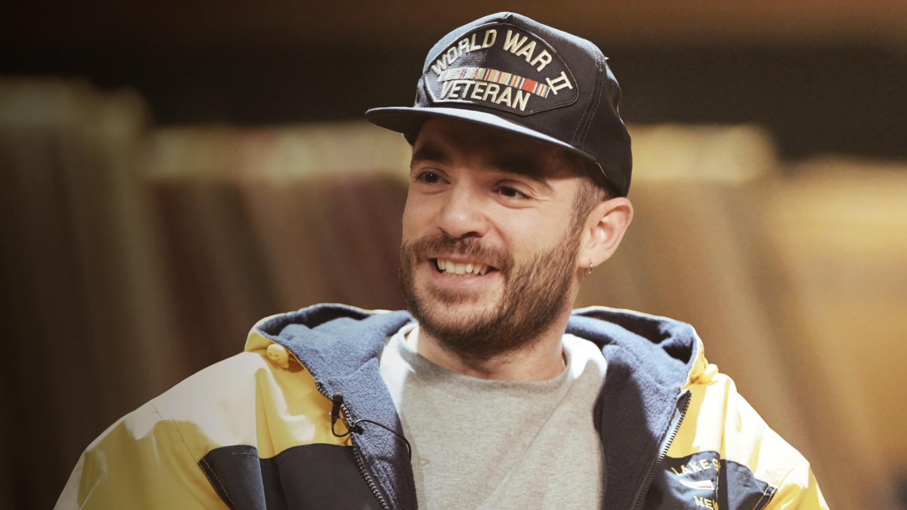
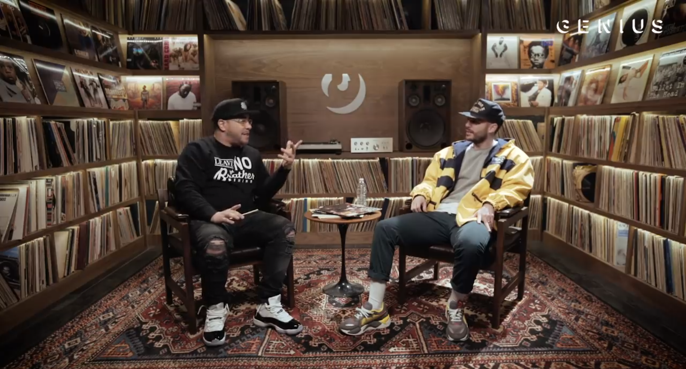
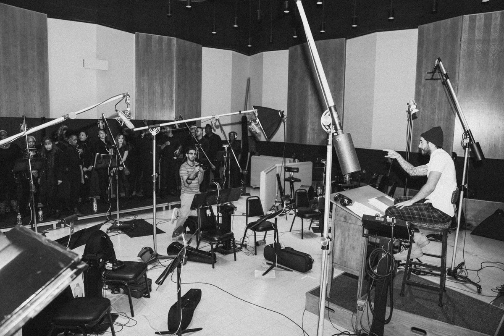
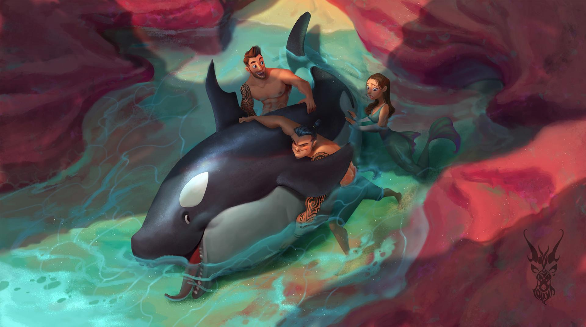

Interview with Jon Bellion:The Secrects He Tells Us We'll Take To The Grave

First and foremost, congratulations on this incredible piece of art, The Human Condition, that peaked at number two on the charts. What was going through your mind the whole first day that it dropped? Thank you! What was going through my mind…I think it was satisfying to know that the fanbase is there and ready to help and spread the music. I think that means the most to me. That’s the most exciting part about any radio single or promo. To have the number two album in the country feels good. What made you include the two singles, “All Time Low” and “Woke The F*ck Up,” but not “Woodstock (Psychedelic Fiction)” on the album? You know, I got asked that question during every single meet and greet at every show so far (laughs). The name of the album is called The Human Condition, meaning no matter what walk of life you come from—or whether you’re tall, or short, or black, or white, or whatever, whatever you believe in—there’s a common thread called the “human condition” that we all deal with. To me, “Woodstock” just didn’t fit The Human Condition. Taking acid and meeting Jimi Hendrix is not the most relatable thing in the world, you know what I mean? But I wanted it to also be special for when we play it live. Was there a specific reason behind the slight change in the middle of “All Time Low” on this release? Yeah, when I first was making the record, about 10 minutes in, I knew I wanted to include it no matter what, no matter how long it took to get to radio or whatever. I just wanted to refurbish it and juice it up a little bit and just polish it off. “He Is The Same” reassures your existing fans that you’ve remained the same person throughout your journey as an artist so far. I almost feel like it’s a response to the song “Luxury.” You were like, “Hey, don’t lose yourself,” and now you’re like, “Yeah, I didn’t.” (Laughs)

What has been the most challenging part of remaining so humble and not changing who you are? You know, sometimes your inner a-hole would want to just stand on a mountaintop and be like, “I told you so,” but that’s not really the way I’m supposed to be acting. Any successful person should be expecting success, so it just makes you look like you weren’t expecting success and you were running around screaming, “I told you so.” It should be a calm, collected, appreciative, humble, gradual climb to what you want to do. I feel like I have to keep myself in check and I keep a lot of my friends around me. My band actually has been with me since college. We’ve been best friends since college and my assistant has been my best friend since fourth or fifth grade. My family is always around, and I think they’d slap me before I got out of hand, or I started treating people differently, or got an attitude or something. The lyrics, “Tell them money is not the key to wealth/’cause if it can stop the pain/how the fuck do you explain a bunch of millionaires that killed themselves?” are very important for people to hear in today’s society. I feel like everyone is on the search for success when it comes to money and they do lose themselves and who they are on that search. Is that how you felt while writing those lyrics? Oh, completely. I thought my life would change and money would solve problems and make life easier, but in fact, it really just made life a lot more complicated. It affected my relationships with people. It was like, “I made a million, there’s no way I can’t make 10, and once I make 10, there’s no way I can’t make 20.” You know, time never ends. I think if you treat life like it’s a constant proving ground, a constant, “Once I get this, and once I get that,” it just never ends. And if anyone thinks that money is going to solve their problems, I mean, without a doubt it makes certain aspects of life easier, but I firmly believe that money should just try to magnify the person that you are. It could be a really dangerous lust. I just want to warn the young youth that are listening to this album that you don’t necessarily need to listen to the radio and what it says. “Hand Of God (Outro)” is one of the most powerful endings to a song I’ve ever heard. You’ve kept your faith throughout your career so far, and this song kind of explains how important keeping your faith is. Could you talk a little more about that? Oh wow, thank you! At the end of the day, my faith is the only thing that can’t necessarily be taken away from me. My success, or my popularity, or a house, or anything really physical can be taken away from me and my faith is the one thing that can’t. It’s definitely important to me. I have times where I waiver things that maybe I don’t know and things that I don’t understand why they happened. It’s hard to deal with. It makes me question things and it makes me question God. It makes me question my faith all the time. But I try to hold onto it as best as I possibly can because that’s the anchor throughout this whole life. It’s funny because faith is the only thing you can’t touch. It’s the thing that people can’t take away from me and it’s important, for sure. I know you have Michael Jackson’s choir from “Man In The Mirror” for that outro. How did getting that specific choir come about? Basically, I approached Capitol and was kind of just like, “I’m going to pay for this myself if you guys don’t want to.” I wanted this to happen. I purposely made my album in an Airbnb, not in a studio, just to budget money for the recording so I could do this outro for my debut album. Long story short, it just so happened that that’s the one [choir] that Capitol got me. Capitol was so dope about it. They let me record in their legendary studio, like Frank Sinatra has been there, and Elton John, and all these different people. It’s a really awesome studio and they brought in a string section and a choir and we transformed the music and wrote it down on paper. We recorded that day, so we’ll be dropping a behind the scenes of that whole day and how it went down. It was really awesome.

Other than that choir behind the scenes video, will you be putting out full videos in the studio like you have with your other songs? Yeah, for sure. We’ll be doing behind the scenes, it’s just that I’m on tour right now. The whole tour is sold out and with the meet and greets and the buses traveling, it’s really tiresome, so I haven’t had the time to sit down with Dexter, my camera guy who has been with me since day one, to go through the footage and edit it. But when we do, it will be awesome. It’ll be for about eight or nine songs. What track stuck out the most to you during the writing and recording process for any reason—maybe it was the most challenging song to create or the least challenging? Hmm. The track that challenged me the most I’d say is “Guillotine.” Honestly, I wrote about six or seven songs to that beat until I liked, finally, the “Guillotine” concept to it and that approach. Are you still producing and writing for other artists, or are you more focused on your own career now? It’s funny, when “The Monster” [by Eminem and Rihanna] went number one and “Trumpets” [by Jason Derulo] being double platinum now, you would expect my schedule to load up with writing with other people when a bunch of people reach out and ask for publishers to work with them, but we actually shut down my publishing career for the past probably year and a half. I haven’t done any outside sessions whatsoever. I’ve just been working on this album. After I get back from tour, I’m probably going to jump back into that world. I think I’m ready to venture out and start working for other people and adding my creative taste. I know you’ve worked with your best friends from college on these songs, so other than them, who is your dream collaboration, dead or alive? I’d say Phil Collins, Band of Horses, Death Cab For Cutie. When it comes to the artwork, did you first discover David Lojaya and decide you want his artwork, or did you first decide you want artwork and then went on the search for an artist? I contacted about 20 animators; some from Pixar, some from video game companies, all different places. Long story short, they all denied me. At the time, all I wanted was an album cover. I wanted the really deep, Pixar-looking album cover. I want to score a Pixar movie. It’s actually one of my life dreams. The first time I heard Phil Collins on the Tarzan soundtrack, it changed my life. I was like, “This song is amazing and it matches with the colors of the music. I want to do this someday.” So, I just wanted a cover originally, but nobody had the time to do it. The last guy on my list was David. I just basically emailed him and I was like, “Hey, might not know me, but I know you’re in Indonesia. My name is Jon Bellion, I’m working on an album and I would love to do an artwork campaign with you.” He was totally down. I sent him the album and he loved it. He ended up sending me the album cover, which I’m sure you’ve seen, and I was so blown away by it so much, that it just sparked this entire campaign in my head. I was like, “Oh my God, we should have three recurring characters—young Jon, current Jon, and the old Jon. We should have a woman who is throughout all the things, and she should be the muse, and she should be the inspiration behind the album. There should always be a beatpad because that’s what I used to work on the album.” So I approached David and I was like, “How would you like to make album covers or movie posters for every single song on the album?” He was totally down. So for eight months, from two in the morning until seven in the morning, we worked on these pictures. I would write up these storylines and storyboards and he would kind of create an image according to what I was writing and it worked out. Until this day, I still never met him face-to-face. We did an entire business plan and a proposition for Pixar and I’ve never even met this guy. It’s just incredible. I hope John Lasseter at Pixar or people over at Pixar see my efforts. We made a book, actually, that we’re going to be able to sell. It comes out in three days. Long story short, it’s all the pictures in a hard cover laminate, amazing, [The] Merch Collective book. In the back of the book, there’s a letter to Pixar basically explaining the fact that I’m dying to work with them. Hopefully it works out!

Would you use these illustrations to do more animated music videos like your video for “Luxury?” Um, not particularly. I mean, I did that already, so I think the next step for me is to just try to do music with Pixar itself. The next time you see my music with animation, hopefully it’ll be in a movie. (Laughs) The younger you is in a bunch of the illustrations, but the ones for “The Good In Me” and “Weight Of The World” stuck out to me because it seems more like the older you is protecting the younger you in those. I don’t know if I really want to ask if the younger you would be proud of you now, because I think that answer is obvious, so I’m wondering what advice you would give to the younger you now. (Laughs) I would tell the younger me to listen to people more and to be more interested in people and to be more invested in other people’s time. Um, not to be so obsessed with success in the music and don’t be so tunnel-driven. I’m very tunnel-driven. I’d be skipping dinners with my family. I wouldn’t eat for two days and make beats for 12 to 14 hours a day, nonstop. I mean, I think that has a lot to do with getting here, but at the same time, I look back and I just wish I took a little more time to smell the roses. Which I kind of have been trying to force myself to do more and more lately—just smell the roses. Like life is great. You’re going to be exactly what you want to be when you want to get there, so just smell the roses a little bit more. That’s probably what I would tell the younger me. I’m assuming you’re most stoked for your New York dates because they are your hometown shows, but what is another city you’re especially excited to play in? Yes, for some reason Salt Lake. We’ve been going there for the past two and a half years, this will be I think the fourth show. It’s actually the biggest show capacity-wise. They just go crazy. The first show we did in Salt Lake, we had a bar and there was like 300 capacity and 500 showed up and they were banging on the windows outside, and like hanging from the ceiling. What?! I know! I don’t know like why, or what it is, but Salt Lake is just out of their minds. It’s fun for the band and myself. It’s funny because when you listen to the music, you think that the live show is going to be this calm, very pretty thing, but the live show is very rowdy, very loud, in your face, and I’m excited for people to see that. I know it just started, but what has been your favorite part about this tour so far? I think the fact that we’re excited that we got away with it. Like, we had literally eight days to put together a show. We’ve played three shows so far and the crowd has been reacting incredibly good. So we’re excited that we made it and we just have fun. Popping in my in-ears, I’m using in-ears for the first time. I’m in my own world on stage and I feel very in control. I’m just excited to play—I love playing music. I love jumping on stage. This is the first tour I’m not necessarily nervous, I’m just more excited to get out there and go crazy with the fans. Lastly, what is next for you after the tour is over? I’m going on vacation—on a long, long, long vacation on a beach in the middle of nowhere (laughs). Jon Bellion’s tour will have its concluding dates at Webster Hall in Manhattan on July 29 and 30. His new album, The Human Condition, is available now through Capitol Records. For more information, visit jonbellion.com.
Contact UsPhone number: +971521494848Email: matejote@gmail.com |